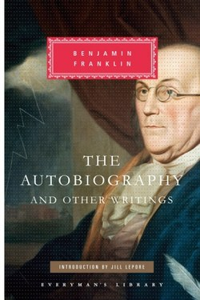

Library › Self-Improvement
The Autobiography of Benjamin Franklin — Summary & Key Lessons

The first great self-improvement book: how a printer's apprentice became a founding father — by system.
📖 OPEN THE FULL INTERACTIVE BREAKDOWN →🌐 Read it in Hindi, Hinglish, Gujarati, Tamil & 22 more languages — free, with audio.
💡 The Big Idea
Franklin wrote the original personal-development manual. His masterpiece of self-engineering: at 20 he designed a 13-virtue programme and kept a scorecard, tracking one virtue a week, correcting faults like a craftsman fixing tools. He engineered habits deliberately — the 'errata' method (treating mistakes as typo corrections), the Junto club for mutual improvement, and a famous humility mask that he admits was itself a performance. The book is honest, funny and endlessly practical.
🧠 The 6 Key Lessons
Lesson 1: The Thirteen-Virtue Scorecard
Part 1: The Project
At 20, Franklin listed 13 virtues — temperance, silence, order, resolution, frugality, industry, sincerity, justice, moderation, cleanliness, tranquility, chastity, humility — and gave each a week of intense focus, tracking violations with a paper scorecard. His point: virtue is not a mood, it is a monitored system. Cunningly, he rotated weeks so each virtue got four turns a year.
📖 Example: A modern version: one habit per week, scored daily, cycled quarterly — the oldest habit tracker in history. Read the full example →
⚡ Do this: Pick 4 virtues; track one per week on paper; repeat the cycle.
Lesson 2: The Errata Method
Part 2: Mistakes as Typos
Franklin called his errors errata — printing mistakes to be corrected, not souls to be damned. This reframe is the whole game: a fault identified is a fault half-fixed; the shame that hides errors is the real enemy. He corrected a public scandal of a printing error by owning it in print. Modern translation: treat failures as edit marks, not verdicts.
📖 Example: The employee who logs their errors and fixes them systematically outperforms the one who hides them. Read the full example →
⚡ Do this: Keep an errata log: one line per mistake, with the fix and the rule to prevent recurrence.
Lesson 3: The Junto: Build Your Upgrade Circle
Part 3: The Club
At 21, Franklin founded the Junto — a Friday club of tradesmen who debated one question weekly and pooled resources to build the first subscription library. The formula: ambitious peers, structured questions, and shared ownership of self-improvement. Almost everything Franklin built — library, fire brigade, university — came from the club.
📖 Example: A small group that meets weekly with one hard question outperforms any self-help app. Read the full example →
⚡ Do this: Start or join one circle: 5-8 ambitious people, one question a week, one shared project.
Lesson 4: The Humility Mask (and Its Lesson)
Part 4: The Performance
Franklin's blunt confession: he added humility to the list only after noticing his pride, and then 'made a virtue of necessity' — feigning modesty because it worked better than arguing. Modern readers note the candour: even the virtue system was a design. The deeper lesson: positive reputation is engineered, and knowing that beats pretending it is natural.
📖 Example: The person who says 'I may be wrong' opens more doors than the one who proves they are right. Read the full example →
⚡ Do this: In your next disagreement, say 'I may be wrong' first — and notice how the conversation changes.
Lesson 5: Industriousness Is the Brand
Part 5: The Work
Franklin's most famous self-description was his trade: 'Benjamin Franklin, Printer'. He worked hard publicly — pushing his own cart through Philadelphia streets — and built a reputation people trusted. His point: the work itself is the marketing. One real book sold beats a thousand clever posts.
📖 Example: The founder whose product speaks for itself outlives the founder who speaks for the product. Read the full example →
⚡ Do this: Do one visible, undeniable piece of work this week — and put your name on it.
Lesson 6: The Art of Virtue: A System, Not a Feeling
Part 9: The Thirteen Virtues
Franklin's most imitated idea: his 13 virtues (temperance, silence, order, resolution, frugality, industry, sincerity, justice, moderation, cleanliness, tranquillity, chastity, humility) tracked in a little leather book — one virtue per week, a dot for each failure, quarterly cycles, the original habit tracker. He freely admitted he never reached virtue, only got closer — and the ledger itself was the teacher.
📖 Example: Franklin's confession: he attained the 'appearance' of humility more than the substance — but even the appearance, he wrote, was worth having. Read the full example →
⚡ Do this: Pick one virtue, make a 13-week grid, mark each day; when you miss, restart the week — the grid is the practice.
✅ 5-Step Action Plan
- Run the 4-virtue scorecard cycle.
- Keep an errata log with fixes and rules.
- Start or join one Junto-style circle.
- Use 'I may be wrong' in the next disagreement.
- Ship one visible piece of work with your name on it.
⚠️ When This Doesn't Work
Franklin's self-portrait is partly PR — he admits editing it; the US founding context (and slave-owning past) complicates the saint image. The engineering method, not the mythology, is what transfers.
💀 The Graveyard Proves It
📷 Mark Twain — America's Funniest Bankruptcy. Burn: $300,000 (≈ $9M today) Read the full case study →
💬 Best Quotes from The Autobiography of Benjamin Franklin
- “If you would not be forgotten as soon as you are dead, either write things worth reading or do things worth writing.”
- “Lost time is never found again.”
- “A man is not generally honest because he is poor, nor dishonest because he is rich.”
Interactive version: mark lessons as read, listen in your language, share quote cards.